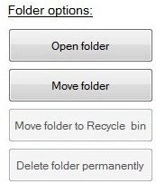
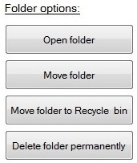
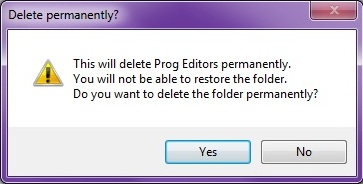
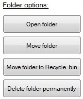
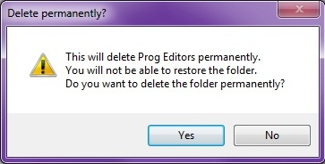

Move the folder to the Recycle Bin or delete the folder permanently.
Due note that this will delete both the selected folder and all its content (subfolders and files).
The difference between moving the folder to the Recycle Bin and deleting the folder permanently
is that with the Recycle Bin you can choose to restore the deleted folder(s).
Deleting a folder permanently means just that - the folder and its content is gone forever, and not restorable.
That' why you can only delete folder(s) when running fullscans.
This is a pre-caution to avoid deleting folders that may seem empty
(moved/deleted by CleanMyFolder, or files that weren't included in the scan) though,
if a specified scan has been run, it's not necessarily all the folders content is being displayed.
When running a specified scan, the buttons for deletion of folders will be disabled.

Deletion buttons disabled

Deletion buttons enabled

Warning message when deleting folder permanently
Deletion buttons disabled

Deletion buttons enabled

Warning message when deleting folder permanently
An example to get a better understanding:
Let's say you scan a folder which basically is used for camera/picture files.
So, you check the extension scan and select 'Pictures'.
Further on, after getting the result, you move the files to a new location or memory stick.
Then, thinking the folder is empty, you delete it.
But, what if that folder also contained some movies?
Some short stuff taken with a cellphone or digital camera.
They would be gone for good if that folder got deleted.
But, if you want to delete a folder, you can also just simply choose 'Open folder',
check if it's empty and then just delete it normally by using Windows Explorer.
<Current version 1.0.0.0>